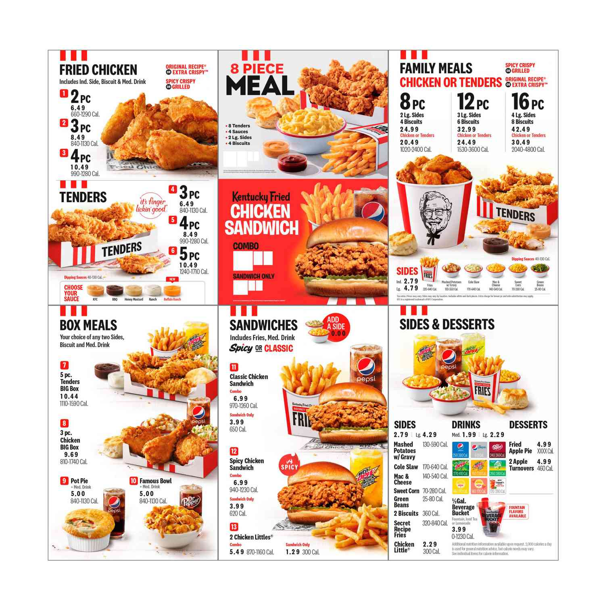
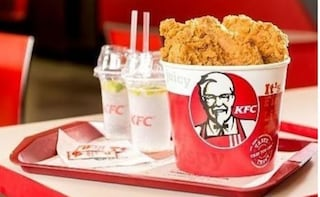

KFC
WHO ARE WE ?
KFC Corporation, doing business as Kentucky Fried Chicken, is an American fast food restaurant chain headquartered in Louiville, Kentucky, that specializes in fried chicken. It is the world's second-largest restaurant chain(as measured by scales) after McDonald's, with 22,,621 locations globally in 150 countries as of December 2019.The chain is a subsidiary of Yum! Brands, a restaurant company that also owns the Pizza Hut and Taco Bell chains.
KFC was founded by Colonel Harland Sanders(1890-1980), an entrepreneur who began selling fried chuicken from his roadside restaurant in Corbin, Kentucky, during the Great Depression. Sanders identified the potential of the restaurant franchising concept and the first"Kentucky Fried Chicken" franchise opened in Salt Lake City, Utah in 1952.
KFC popularized chicken in the fast-food indusrty, diversifying the market by challanging the established dominance of the hamburger.By branding himself as "Colonel Sanders", Harland became a -prominent figure of American cultural history and his image remains widely used in KFC advertising to this day.
However, the company's rapid expansion overwhelmed the aging Sanders and he sold it to a hroup of investors led by John Y. Brown Jr. and Jack C. Massey in 1964.
KFC was one of the fiest American fast-food chains to expand internationally, opening outlets in Canada, the Kingdom, Mexico and Jamaica by mid-1960's.
MENU & ITEMS:
 